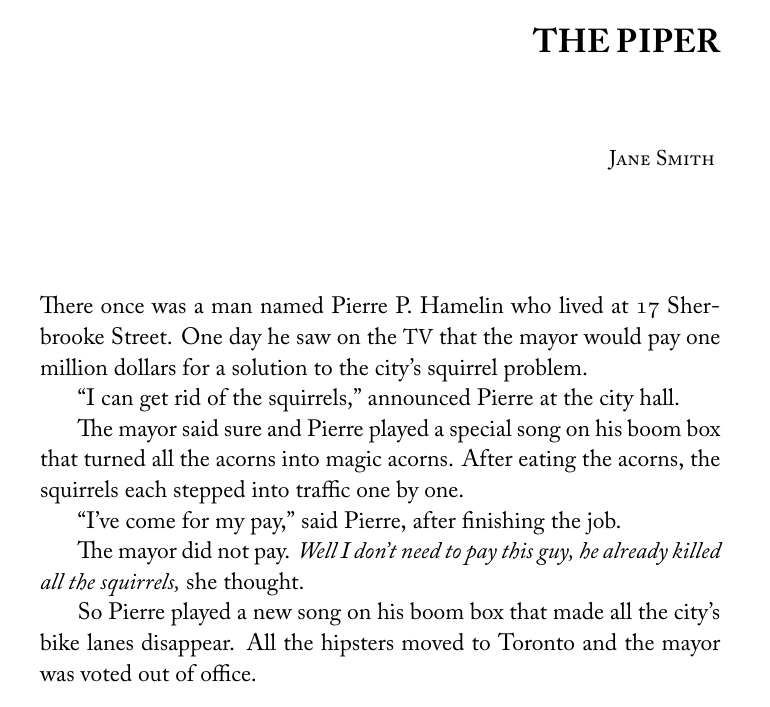

After decisions have been made, this is the timeline of events.
Once decisions have been made, the selected pieces will be listed in a spreadsheet, and the selected authors will be divided among the editors. There will be cells in the spreadsheet to keep track of how far along in the process we are with each piece. Once the whole spreadsheet is green, we'll be ready for the printers!
Each editor should notify their authors individually that we want to publish their piece, and ask whether it's already been taken. We also request First North American Serial Rights from them, ask whether they'll be able to attend the launch, and whether they want to reserve copies at contributor pricing. All of this has been done many times in the past, so you can search our email archives for a template, and edit the author's name, name of the work, etc. accordingly.
Once your author has confirmed the piece is still available, it's time to square away the edits that you want to make to the piece. If the piece requires no modification whatsoever, you may skip this step.
Either by annotating their document or just listing the requested changes in the text of the email, ask the author whether they're O.K. with the changes you want to make, and whether they want to make any additional or alternative edits. This may involve a back-and-forth exchange of multiple emails, and is usually the most time-consuming part of this whole process.
When you are done with the previous step, you will either have a Word or Google document with all the changes done, or the original PDF, plus a list of author-approved changes. Either way, you'll need to copy the text into a .txt file (you can make this type of file using e.g., Notepad on Windows or TextEdit on Mac). For documents, this is as easy as just copying the text over. For PDFs, you may have to use a PDF-to-text converter online.
After converting to .txt, you'll see that all the formatting information has been lost. You'll have to add it back in using a markup language that the Ahoy typesetting program understands.
Here's an example story.
The Piper by Jane Smith There once was a man named Pierre P. Hamelin who lived at 17 Sherbrooke Street. One day he saw on the TV that the mayor would pay one million dollars for a solution to the city's squirrel problem. "I can get rid of the squirrels," announced Pierre at the city hall. The mayor said sure and Pierre played a special song on his boom box that turned all the acorns into magic acorns. After eating the acorns, the squirrels each stepped into traffic one by one. "I've come for my pay," said Pierre, after finishing the job. The mayor did not pay. Well I don't need to pay this guy, he already killed all the squirrels, she thought. So Pierre played a new song on his boom box that made all the city's bike lanes disappear. All the hipsters moved to Toronto and the mayor was voted out of office.
The way you would enter it into the .txt file is as follows.
\bookheader{\it Jane Smith}{\it The Piper}
\preambleheader{THE PIPER}{Jane Smith}
There once was a man named Pierre P.~Hamelin who lived at {\os 17} Sherbrooke Street.
One day he saw on the {\mc TV} that the mayor would pay one million dollars for a
solution to the city's squirrel problem.
``I can get rid of the squirrels,'' announced Pierre at the city hall.
The mayor said sure and Pierre played a special song on his boom box that
turned all the acorns into magic acorns. After
eating the acorns, the squirrels each stepped into traffic one by one.
``I've come for my pay,'' said Pierre, after finishing the job.
The mayor did not pay. {\it Well I don't need to pay this guy, he already killed all
the squirrels,} she thought.
So Pierre played a new song on his boom box that made all the city's bike lanes
disappear. All the hipsters moved to Toronto and the mayor was voted out of
office.
(Don't worry about the "bookheader" and "preambleheader" tags if you're confused about them. I can always add them myself later.) The Ahoy typesetting program will read this and produce the following output.
There's a lot of stuff to keep track of, so don't worry about getting everything. I will look over everything again and fix anything you've missed, but just try to get as much of the formatting done as possible to lighten my workload.
You can concatenate everything into one .txt file or have multiple .txt files. There'll be a designated place in the Google Drive to upload these files.
Once the texts have been formatted and converted into PDF by the Ahoy typesetting program, I'll send the PDFs to the authors to make sure they're happy with how their work will appear in the final magazine. There's nothing that you editors have to do at this stage, but if there are discrepancies between what are in the proofs and what the authors intended, I'll have to refer to the email threads you made with the authors, so make sure that there is a clear record of all agreements you reach. (Otherwise I'll have to DM you to ask for more details!)